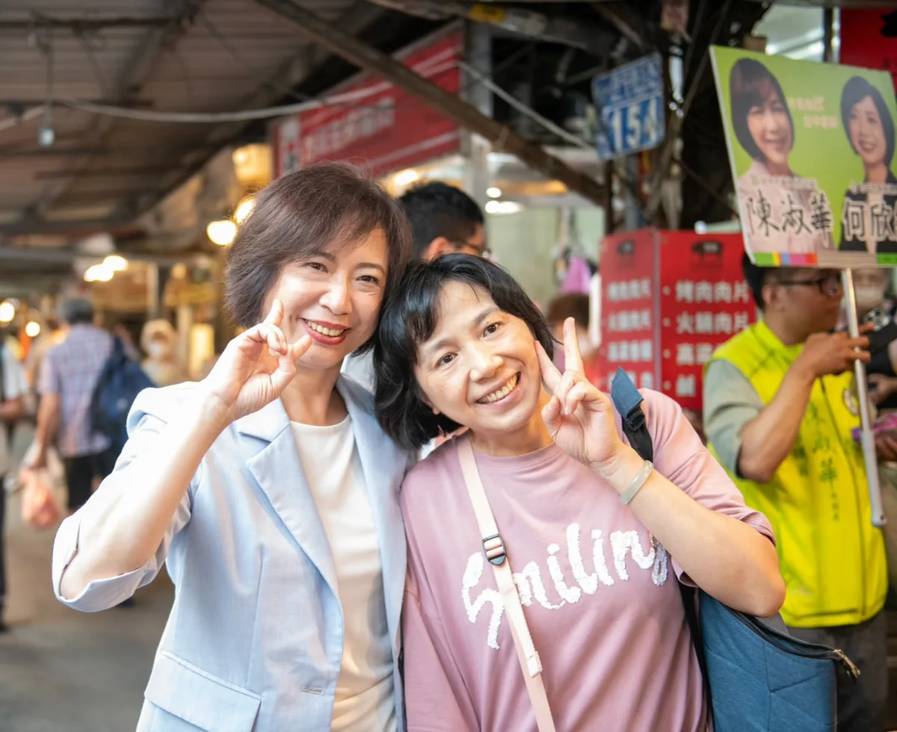
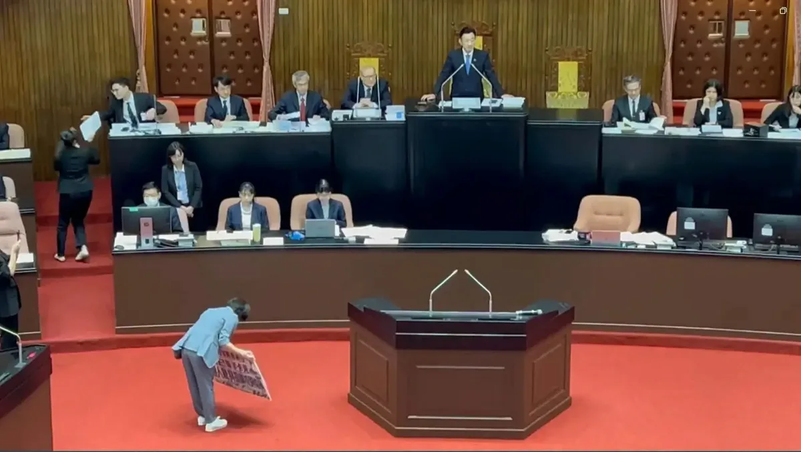
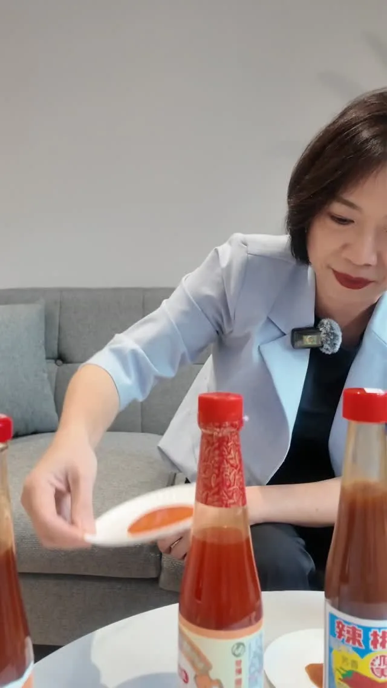
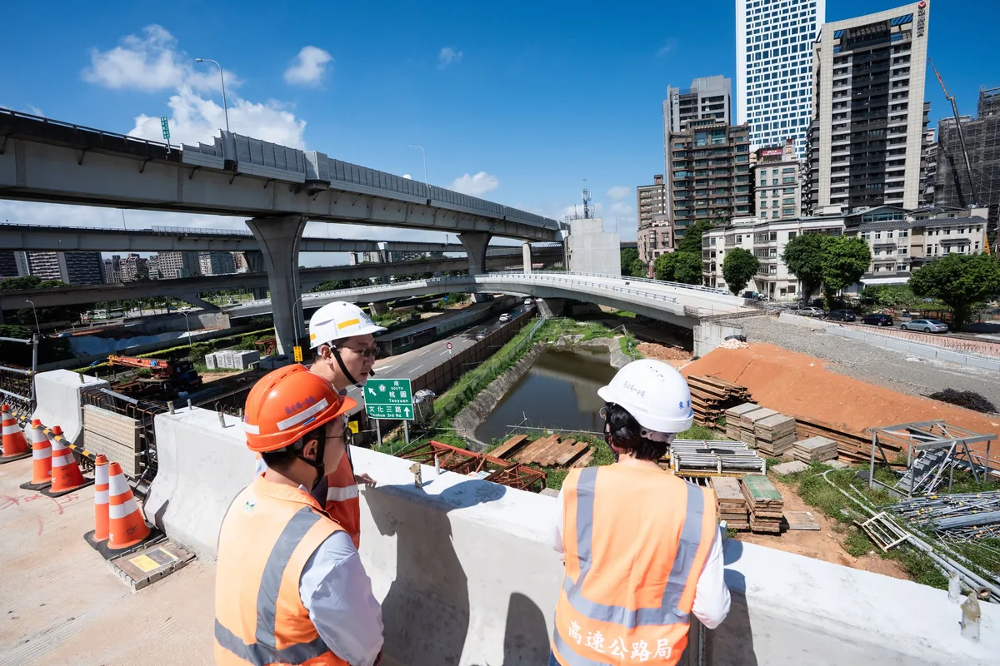
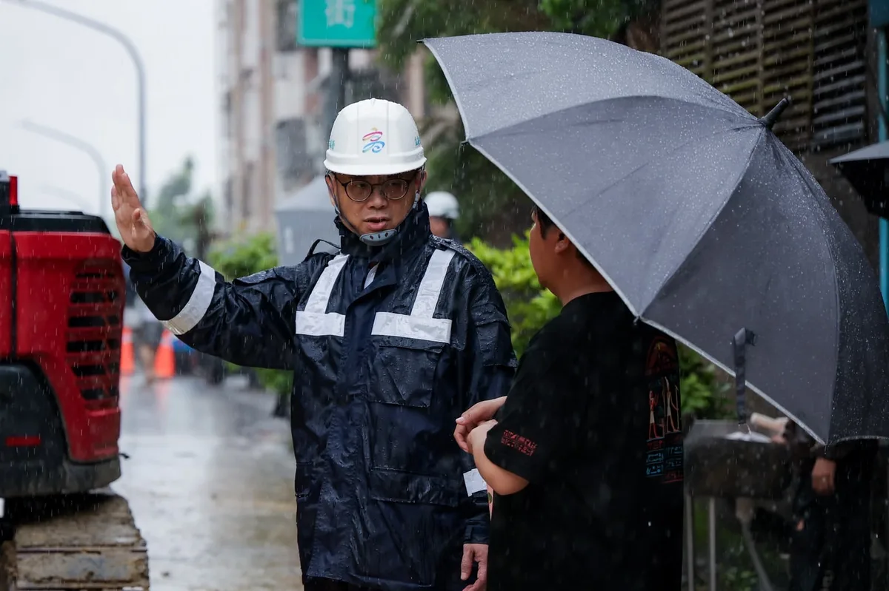

MAYOR2026.OBSERVE.TW
整理臺北、新北、桃園、臺中、臺南、高雄市長候選人的官方公開發文，跨平台合併時間軸與議題比例。
Six Municipalities
最後更新 2026-08-29 22:27
Latest
@hsiehlungchieh:龍介2026年9月1日會去登記參選台南市長

Let's all head out and support different sheltered workshops—they’re beautiful, delicious, and of...

@su.chiaohui:週六行程滿檔！打造新北觀光品牌 活絡商圈老街經濟！


@a_chun1973:來到西屯水堀頭黃昏市場，和大家見面、聊聊天👋 從攤商熱情的招呼，再到鄉親一句句「加油」，都讓我感受到滿滿的溫暖。 謝謝每一位給我鼓勵及建議的朋友，未來我會繼續走遍台中各個角落，多聽、多看、多了解，和大家一起把台中變得更好！

@prof.kochihen:高雄連日豪雨，小港松富街昨日下午發生土石崩落，今早雨勢再起，第一時間與曾麗燕、陳麗娜、蔡武宏議員前往現場關心。 目前市府已緊急疏散部分居民，也要求持續評估災害潛勢，必要時擴大警戒範圍。守護市民安全是第一優先，請附近居民務必提高警覺、配合疏散指示。 祈求雨勢早日減弱，高雄平安。

@a_chun1973:看到謝金河董事長感嘆發文「誰在阻擋台灣的無人機產業？」 我深有同感，且為台中傳產及無人機業者感到憂心忡忡！ 2400億元的無人載具條例通過，謝董認為，如果這個法案對產業發展有利，那麼資本市場一定強烈大漲回應，不過，股市卻大跌回應，尤其一些代表性的個股都跌很重。這顯示，無人載具條例雖通過，但卻內藏重重機關，也讓無人機產業發展備受波折。 謝董話鋒一轉，台灣發展無人機產業，除了國防需求之外，也是產業陷入瓶頸的傳統產業轉型的新契機，尤其是台中市的工具機產業、五金零件產業等，但，事關台灣生存的最大敵人卻使盡全力封鎖這些產業。 謝董很感慨，只有台灣最奇怪，生活在這塊土地上的人，他們愛別人的國家，而且還拿刀捅自己！這是台灣的最不幸！ 我非常認同謝董所言，勞工、產業、與民意都清楚表示，台灣應該在國家安全下、經濟、民生、產業繼續往前大步發展，身為國會議員，為所當為、言所當言。如果只是口惠實不至、閃躲不表態，就是默許丶眼睜睜看著台中產業被扼殺。 我遺憾、也很難過，但我不會放棄、我要繼續拚搏，為這片土地為產業的未來而努力！

@zenolai:今天下午，小港區松富街發生擋土牆倒塌，所幸沒有人員受傷。 市府已緊急疏散7戶、28位居民，並調派人力機具進場處理，先移除危險樹木、覆蓋崩塌區域並設置夜間警示，確保周邊居民安全。 目前現場仍在緊急處置，請民眾暫時不要靠近崩塌區域。近期豪雨過後，各地坡地及擋土牆周邊都要特別留意，行經時請放慢車速，也盡量不要將車輛停在邊坡下方，安全第一。
Councilor Chang Wen-chieh prepared a giant bowl of shaved ice for me, symbolizing the weight of m...

Step up to the plate with Council Member Wang Min-sheng and hit a home run for Team Taipei!

@a_chun1973:辦公室同仁準備五款常見辣椒醬，要我來場盲猜大挑戰！ 🌶️ 身為無辣不歡的資深辣椒系選手（？），這題對我來說應該只是桌頂拈柑（toh-tíng ni-kam）而已吧～ 👇 辣純派集合！留言推薦你心中的必吃辣椒／辣椒醬吧！

@schuanglawyer:週六的夜市，遇到6歲的「杰伴小企鵝」🐧💖 今晚來到八德興仁花園夜市，週末夜晚人潮滿滿、美食香氣一路飄散，越晚越熱鬧！最驚喜的是遇到目前年紀最小的杰伴，6歲妹妹特別拿著Q版的我和企鵝插圖來找我簽名，真的太可愛了！ 興仁花園夜市除了有各式各樣的美食，也有不少遊戲攤位，是很多爸媽週末帶孩子來逛逛、放電的好去處💯 繼續一步一腳印，把大家的聲音放在心上！心八德，動起來💖明晚桃園夜市見！

@pumashen:像育成蕃薯藤 @ycyamch 這樣的庇護園區、庇護工場， 除了節日禮盒外， 也需要大家日常消費的支持， 營運才能永續！ ⠀ 大家可以一起分頭支持 不同的庇護工場， 都是又漂亮又好吃 CP值又高！

@schuanglawyer:明天晚上19:30，動起來！桃園夜市✨ 桃園夜市是不少在地人晚餐、消夜覓食的熱門去處，從中正路一路延伸，各式小吃香氣一路飄散，從經典鹹食、甜點飲品到人氣銅板美食，每走幾步就有不同選擇😋 明晚19:30，世杰來到桃園夜市，感受桃園夜晚的熱鬧活力！心桃園，動起來💖

@su.chiaohui:今天我和 @hou.yuih 侯友宜市長、@realeliotyli 李宇翔議員一起前往視察國道1號五股、林口交流道改善工程。感謝中央大力支持新北交通建設，兩項工程中央一共挹注✨80億元！ 去年十月，五股交流道北出匝道就已經提前通車，在中央、地方大力合作、第一線施工團隊日夜努力之下，北入匝道也預計在今年十月✨提前半年通車！未來可由台65線直接高架銜接國道1號，大幅緩解在地居民的塞車之苦。 大家關心的「林口交流道改善工程」也在全力推進中，未來隨著國1南下主線拓寬、匝道增設、箱涵立體化，分流車輛外也降低事故風險，行車更順暢安全！ 中央、地方一起努力，一步步打造更便捷完整的新北交通路網！

@prof.kochihen:高雄市連日豪雨，昨日下午小港松富街發生土石崩落意外，大量土石沖垮擋土牆，崩落的土石就在民眾家門前，第一時間我已經掌握訊息，並請黨籍議員前往關心，也先讓市府團隊盡快處理。 高雄今日凌晨起再降暴雨，我擔心災害擴大，臨時排開行程，與曾麗燕議員、蔡武宏 議員與陳麗娜議員前往現場，並與山明里陳阿子 里長一同關心。市府初步已緊急疏散部分居民，但豪雨未止，我們也請市府評估是否需再把警戒範圍擴大，並盡快做災害潛勢評估。 守護市民安全是首要之務，我們支持市府率先防災，若有任何需檢討、監督、協助之處，留待日後再做討論，也請住在附近市民朋友注意安全，配合市府引導指揮。 也祈求大雨盡快過去，高雄一切平安。

@schuanglawyer:傳承百年的景福宮中元祭典，是桃園特色文化，凝聚了一代代桃園人的共同記憶。 世杰會和大家一起努力，不只要讓心桃園動起來，更要守護在地文化，讓桃園在進步繁榮的同時，也有令人眷戀的溫度💖

@schuanglawyer:晚上來到柏翰的說明會，感謝杰伴跟小企鵝們，特別準備應援物！
@pumashen:〖洋流好物 捐款常見問題解答〗 ⠀ 𝙌. 小物可以換嗎？ 𝙌. 沒有收到確認信件怎麼辦？ 𝙌. 如何變更寄送地址？ ⠀ 過去一週大家最常問的問題， 我們搜集起來， 今天一次整理解答給大家！
[Otter Mom's Little Talks] Can I Be Your Dog? | Adopt Don't Shop | Animal Friendly | Children's P...
🌶️ 身為資深辣椒系選手，這題我應該很可以吧？ 辦公室同仁居然準備了五款常見辣椒醬，要我來場蒙眼盲猜大挑戰！ 究竟我這個「辣椒專家」是真材實料，還是辣到翻車？看下去就知道🔥 辣純派集合！
Hsieh Lung-chieh will register to run for Mayor of Tainan on September 1, 2026 #HsiehLungChieh #R...

@schuanglawyer:現此時的八德興仁花園夜市💖

@zenolai:爭取小港松富街復建經費 全面建構韌性高雄 昨日小港松富街發生擋土牆坍塌，我在第一時間掌握狀況，聯繫市府工務局等單位，協調緊急處置。今天也到現場，了解居民安置及邊坡安全情形，並針對重建所需經費，致電行政院秘書長爭取中央支持。 目前市府已預防性疏散7戶、28位居民，並移除危險樹木、覆蓋崩塌區域及設置安全防護，避免持續降雨造成二次災害。 這座擋土牆已有34年，初步估算重建約需數千萬元，將請市府儘速提出復建計畫，爭取中央經費，加速推動重建工程。 目標力拚明年汛期前完成重建，並以長久性、系統性的方式全面檢視邊坡及周邊安全，結合必要的補強與智慧監測，從根本降低風險，讓居民住得更安心。
@zenolai:從簡、從速、從寬，高雄農業災損啟動「免勘查」措施 為了讓受豪雨影響的農民朋友能更快申請農業災害救助，農業部公告，針對8月下旬豪雨造成的農作物損害，啟動簡化措施，落實「從簡、從速、從寬」。 這次高雄市全區適用，符合以下條件的農作物，區公所將採簡化程序，得「免勘查」辦理： 🔺適用地區：高雄市全區 🔺適用農作物：蔬菜全品項、酪梨、木瓜、番石榴 🔺注意事項：以「塑膠布溫網室」栽培的農作物不適用此簡化措施。 各區公所接下來會陸續公告受理時間，也請受災農民朋友留意所在地區公所的最新消息，在期限內提出申請。
競選總部9/12成立！馬戲團＋文化復興＋青年局 阿純大公開
古蹟可以不只是古蹟！何欣純談英國求學悟出的活化小tips

晚上來到柏翰的說明會，感謝杰伴跟小企鵝們，特別準備應援物！

@chen_tingfei:翁曉玲妳也是女性，何必為了蹭熱度，來傷害一位完全不認識妳的女性朋友呢？ 昨天大家在狂傳這一段話，讓我更不捨幸妤，一個對政治沒有興趣，連翁曉玲是誰都不知道的人，為什麼會莫名其妙中「翁曉玲」的槍呢？ 幸妤為了保護自己的小孩，展現媽媽的本能，何錯之有？為什麼翁曉玲要用「扁家就是愛錢」來傷害一位為母則強的媽媽呢？而且幸妤只是要追回合法贈與給自己小孩的錢，翁曉玲真的不用這麼迫不及待地傷害對政治毫無興趣而且根本不知道「翁曉玲」是誰的陳幸妤。 圖片來源：東森新聞
@hsiehlungchieh:公告》今晚龍介直播暫停一次…各位市民朋友我們下集見

國七要通，地方道路配套也要到位！ 今天與邱于軒議員、王耀裕議員、黃天煌議員的團隊，以及後庄里里長鄭德文，一起針對國道七號鳳寮交流道衍伸的交通問題進行討論。地方鄉親不是反對國七，而是擔心交流道通車後，現有道路無法承受增加的車流。尤其鳳屏一路、成功路上下班時段已經經常壅塞，未來國七車流進入民族路、成功路，勢必帶來更大的交通壓力。 更重要的是，國七具有重要貨運功能，未來大型車輛進出勢必增加。對每天生活在這裡的居民來說，大型車流不只考驗道路容量，也會增加交通安全、噪音及行車負擔。因此，國七要蓋，但地方配套道路也必須同步做好，不能讓居民承擔建設帶來的交通代價。 國七是重大建設，但不能只看高速公路本身，地方聯外道路、大型車流疏導、土地取得與經費，都要同步到位。高屏二也已經發包，未來有機會進一步分散高雄、屏東車流。現在就是把配套一次做好、把問題一次解決的關鍵時刻，讓國七帶來發展，也不要讓後庄居民承受更大的交通負擔。